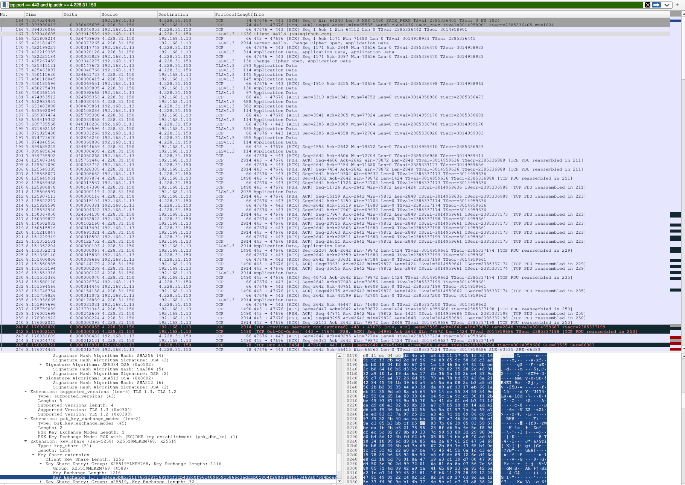

É Basicamente uma aplicação para guardar código na nuvem
O GitHub apoia todo o ciclo de desenvolvimento
Onde voce pode compartilhar seu código com estranhos na internet
| Protocolo | Porta | Transporte | Uso no GitHub |
|---|---|---|---|
| HTTPS |
|
TCP | Site, API e git |
| SSH |
|
TCP | git |
| DNS | 53 | UDP | github.com → 4.228.31.150 |
| TLS 1.3 | - | TCP | Criptografa o HTTPS |
| HTTP | 80 | TCP | Só redireciona para HTTPS |
| Git | 9418 | TCP | Protocolo nativo do git, desativado no GitHub |
| TCP/IP | OSI | No GitHub |
|---|---|---|
| Aplicação | Aplicação | HTTP/2, SSH, DNS, Git |
| Apresentação | TLS 1.3 (criptografia) | |
| Sessão | Sessão TLS / sessão SSH | |
| Transporte | Transporte | TCP (443, 22) e UDP (53) |
| Internet | Rede | IP: 192.168.1.13 -> 4.228.31.150 |
| Acesso à rede | Enlace | Ethernet / Wi-Fi |
| Física | Cabos, ondas de rádio |
❯ nslookup github.com Server: 192.168.1.101 Address:192.168.1.101#53 -> meu servidor local de dns Non-authoritative answer: Name: github.com Address:4.228.31.150 -> ip retornado pelo servidor dns
❯ dig +trace github.com[...] . a.root-servers.net. . f.root-servers.net. ;; Received 525 bytes from (192.168.1.101) in 24 ms[...] com. c.gtld-servers.net. com. d.gtld-servers.net. ;; Received 1170 bytes from (f.root-servers.net) in 26 ms[...] github.com. ns-1707.awsdns-21.co.uk. github.com. ns-1283.awsdns-32.org. github.com. dns2.p08.nsone.net. ;; Received 663 bytes from (d.gtld-servers.net) in 138 msgithub.com. 4.228.31.150 ;; Received 55 bytes from (dns2.p08.nsone.net) in 26 ms
❯ nslookup github.com Server: 192.168.1.101 Address:192.168.1.101#53 -> meu servidor local de dns Non-authoritative answer: Name: github.com Address:4.228.31.150 -> ip retornado pelo servidor dns
❯ nslookup github.com 84.200.69.80 Server: 84.200.69.80 Address:84.200.69.80#53 -> um servidor alemao de dns Non-authoritative answer: Name: github.com Address:140.82.121.3 -> ip retornado pelo servidor dns
❯ whois 4.228.31.150 | grep -E "NetRange|CIDR|OrgName"
NetRange: 4.224.0.0 - 4.239.255.255
CIDR: 4.224.0.0/12
OrgName: Microsoft Corporation
❯ whois 140.82.121.3 | grep -E "NetRange|CIDR|OrgName"
NetRange: 140.82.112.0 - 140.82.127.255
CIDR: 140.82.112.0/20
OrgName: GitHub, Inc.
❯ git clone https://github.com/LeoRDG/Github.git

| Fonte | Destino | Protocolo | Info |
|---|---|---|---|
| 192.168.1.13 | 4.228.31.150 | TCP |
|
| 4.228.31.150 | 192.168.1.13 | TCP |
|
| 192.168.1.13 | 4.228.31.150 | TCP |
|
| 192.168.1.13 | 4.228.31.150 | TLSv1.3 | Client Hello (SNI=github.com) |
| 4.228.31.150 | 192.168.1.13 | TCP |
|
| 4.228.31.150 | 192.168.1.13 | TLSv1.3 | Server Hello, Change Cipher Spec ... |
| 192.168.1.13 | 4.228.31.150 | TCP |
|
| [...] | [...] | [...] | [...] |
| 192.168.1.13 | 4.228.31.150 | TCP |
|
| 4.228.31.150 | 192.168.1.13 | TCP |
|
| 192.168.1.13 | 4.228.31.150 | TCP |
|
| 4.228.31.150 | 192.168.1.13 | TCP |
|
| 192.168.1.13 | 4.228.31.150 | TCP |
|
❯ git push origin main
| Fonte | Destino | Protocolo | Info |
|---|---|---|---|
| 192.168.1.13 | 4.228.31.150 | TCP |
|
| 4.228.31.150 | 192.168.1.13 | TCP |
|
| 192.168.1.13 | 4.228.31.150 | TCP |
|
| 192.168.1.13 | 4.228.31.150 | SSHv2 | Client: Key Exchange Init |
| 192.168.1.13 | 4.228.31.150 | SSHv2 | PQ/T Hybrid Key Exchange Init |
| 4.228.31.150 | 192.168.1.13 | SSHv2 | PQ/T Hybrid Key Exchange Reply, New Keys |
| 192.168.1.13 | 4.228.31.150 | SSHv2 | New Keys |
| 192.168.1.13 | 4.228.31.150 | SSHv2 | Client: Encrypted packet (len=2848) |
| 192.168.1.13 | 4.228.31.150 | SSHv2 | Client: Encrypted packet (len=14240) |
| 192.168.1.13 | 4.228.31.150 | SSHv2 | Client: Encrypted packet (len=37024) |
| 192.168.1.13 | 4.228.31.150 | TCP |
|
| 4.228.31.150 | 192.168.1.13 | TCP |
|
| 192.168.1.13 | 4.228.31.150 | TCP |
|